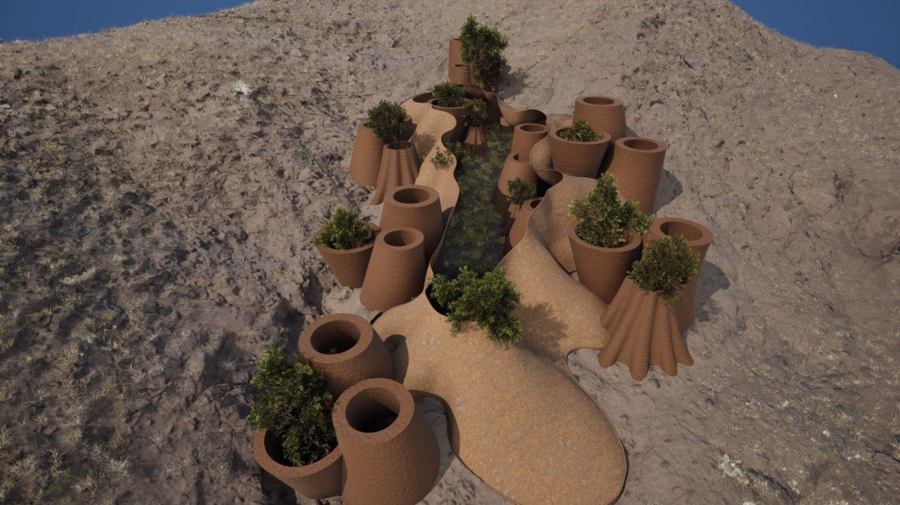
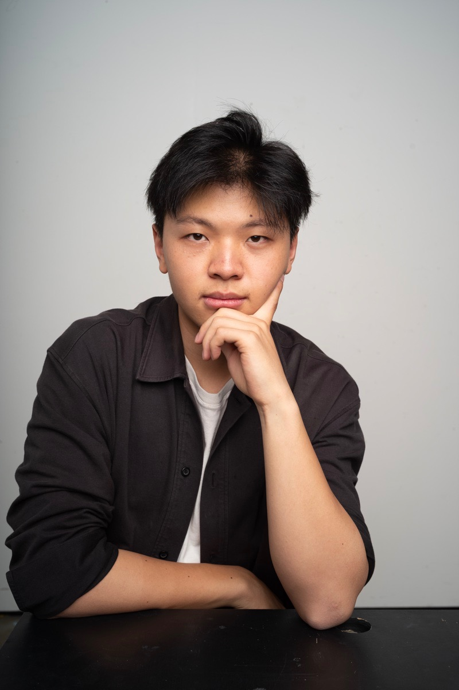

vasé — Urban Farming Tools
RSA brief. Bonsai- and ikebana-inspired tool set for indoor growing.
I build products, systems, and bio-integrated materials — from wearables to water to living substrates.
Computational design, robotic fabrication, and product engineering — taken from research brief to validated prototype to commercial production. Currently designing R&D systems at KSM Technologies; previously built robotic clay-extrusion workflows at UCL Bartlett.

Most arid landscapes can’t be reforested — but they can be reseeded with biological soil crust, the living skin that holds desert ecosystems together. The challenge: a fabrication system that places live microbiota at scale, in geometries that protect them long enough to colonise.
Field-tested cluster on the Tabernas slope (Spain). Three peer-reviewed publications: poster & conference paper at Cocoon 2025, masterclass paper under review at DigitalFUTURES CDRF 2026.
Read the case study →Why this matters: atria and glazed buildings burn energy passively — a canopy that photosynthesises power turns dead overhead surface into a working skin.
Bio-photovoltaic canopy prototype integrating plant-based HBPV cells into a tessellated structure. Group MArch project, UCL.
Read the case study →Why this matters: a home-water product a family actually brings into their kitchen — shipped, not conceptual.
Lead product design for the NX Water sub-brand at KSM Technologies: filter housing, control panel, exterior aesthetics, and full brand identity. Chinese design patent granted on the filter housing (Dec 2025). Brief-to-prototype engineering collaboration delivered IP outcomes for the programme. Further engineering and testing specifics available under NDA.
Read the case study →Why this matters: one in three adults over 65 falls each year — a soft, unobtrusive knee-support can keep someone independent for another decade.
A preventative knee-support concept for older adults, built around a soft artificial-muscle actuator. User-research driven, prototyped through soft-fabrication, tested on stair-descent scenarios.
Read the case study →Why this matters: decommissioned satellite dishes are industrial-grade parabolas already sitting on roofs — giving them a second life as urban wind collectors is infrastructure you don’t have to manufacture.
A circular reuse pathway that converts end-of-life satellite dishes into urban vertical-axis wind-turbine prototypes. Strategy, systems model, and functional prototype; published as part of my BA final-year portfolio.
Read the case study →Why this matters: running a studio teaches you the part design school can’t — quoting, scheduling, failure, and delivering to a paying client on a real deadline.
Co-founded and bootstrapped a 3D-printing studio from £5k to 10+ machines in 5 months. Delivered batch orders, film props, and bespoke prototypes; ran scheduling, maintenance, supplier quoting, and client delivery end-to-end.
Read the case study →Why this matters: designers carry visual references in scattered folders — an embedding-native tool lets taste itself become searchable, without uploading your work to a server.
A desktop app that learns your aesthetic taste using CLIP embeddings — semantic search, style briefs, and 3D cluster mapping. Built from scratch as a native macOS app in 4 days. Now in private beta.
Read the case study →RSA brief. Bonsai- and ikebana-inspired tool set for indoor growing.
Compact conduction cooktop with smoke extraction. Design 2 Gather, Shanghai.
Counter-top blender enclosure that consolidates attachments and dampens noise.
KeyShot & Redshift visualisation across client and personal work.
Pure HTML/CSS/JS. EN/ZH bilingual, dark/light themes, dedicated case-study pages.
Practical LLM + computer-vision integrations for design research and parameter exploration.
Most briefs underspecify the thing that will actually kill the project — a tolerance, a regulation, a commercial margin. Finding that constraint first saves weeks.
Cardboard before resin. Sketch before CAD. One print before a batch. A prototype’s job is to be wrong early, not to look finished.
The ~40% setup-time reduction on Trace Terra wasn’t a single change — it was rebuilding the path from CAD to KUKA so each iteration cost minutes instead of hours. Tooling compounds.
A studio-only prototype is still a sketch. The work I’m proudest of made it into a desert, a factory, or a customer’s kitchen.
| 2025 | R&D Designer · KSM Technologies London / Remote Led NX Water sub-brand: filter housings, control panels, full exterior aesthetics + brand identity. Continued thermal/airflow R&D. Patent granted Dec 2025. |
| 2023–25 | MArch Bio-Integrated Design · UCL Bartlett London Computational design, material R&D, robotic fabrication for climate-resilient systems. |
| 2022–23 | Co-Founder · Mel Studio (3D-print) London £5k seed → 10+ machines in 5 months. 200+ unit batches, film-crew props, bespoke prototypes. |
| 2021 | Design Intern · Design 2 Gather Shanghai Cooktop & blender concepts. Client-consultancy sessions on competitive analysis & pricing. |
| 2020–21 | Freelance Product Designer · Bottloop / Incom Beijing Co-designed a consumer bag from brief through to retail launch. |
| 2020–21 | Product & VI Designer (placement) · Beijing KSM Beijing Visual identity refresh, then R&D on product redesign. Continued part-time through 2021. |
| 2017–22 | BA Product & Industrial Design · CSM, UAL London User-centred product development with industrial placement year (2019–20). |

James Lang · London, 2025I sit at the seam between design and engineering — the place where a CAD file becomes a thing that has to actually work.
I started in industrial design at Central Saint Martins, then spent five years moving deliberately between studios, factories, and research labs. The thread is the same throughout: take an ambitious brief, find the constraint that’ll kill it, and build the workflow that makes shipping possible.
Recent work has been heavy on robotic fabrication and bio-integrated systems (Trace Terra at UCL, NX Water at KSM Technologies). Alongside that I co-founded Mel Studio, a 3D-printing studio that bootstrapped from a £5k seed to 200+-unit batch orders in its first year. I read papers, run material tests in the kitchen, and write the scripts that connect them. I’m looking for a team where the answer to “can we actually make this” is the most interesting question in the room.
006 / GET IN TOUCH
Open to product, R&D, and design-engineering roles — in-house or studio. Freelance considered for projects that involve prototyping or fabrication R&D.